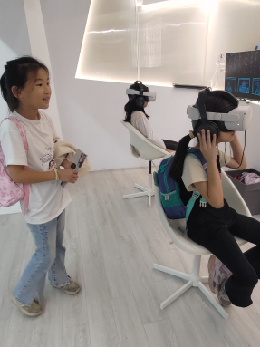
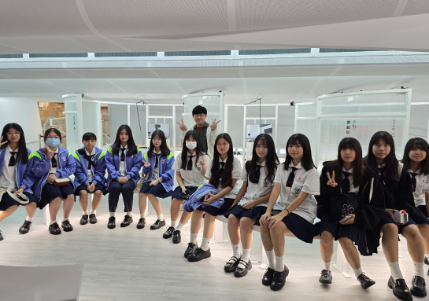
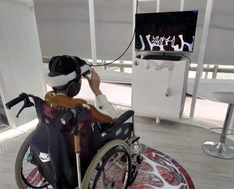
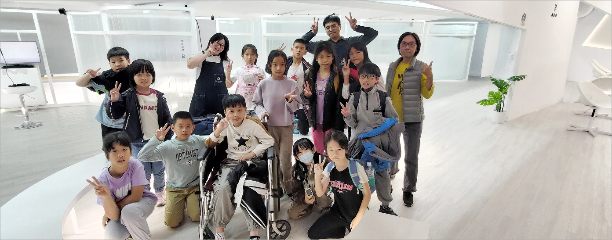

VR預約
VR藝廊概念介紹
隨著虛擬實境與人工智慧技術的蓬勃發展，藝術的呈現方式正不斷突破邊界。國立臺灣美術館設立於2樓空橋的「VR藝廊」，是全球少數設於國家級美術館內的常設虛擬實境展覽空間，以沉浸式科技為媒介，串連藝術創作與觀眾體驗，開啟穿越時空的藝境之旅。
VR藝廊現全面免費開放，並導入雙語AI導覽系統，互動導覽服務。觀眾可依自身節奏探索展覽內容，由AI智慧系統即時提供作品介紹、創作背景，讓觀展過程更直覺、更個人化。歡迎大專院校、國高中師生、藝術團體與教育機構踴躍申請團體參訪，館方將安排專業解說與體驗說明，帶您進入未來藝術的互動場景。



-
展出內容與單元規劃
＊常態展出單元 Permanent Program
以國立臺灣美術館館藏與臺灣藝術家之VR及沉浸式創作為核心，搭配精選國際重要VR藝術作品，形成兼具在地視角與全球視野的長期展出主軸，呈現VR藝術多元面貌。＊當季展出單元 Seasonal Program
依年度策展主題定期更新內容，每季聚焦一個核心議題，邀請國內外創作者以VR影像與互動敘事等形式創作，並可搭配講座、對談與教育活動，深化觀眾對主題的理解。＊特別單元 Special Feature
不定期推出主題策展、國際合作專案與教育推廣企劃，串連國內外藝術機構與影展資源，結合AI智慧推薦與自動看片系統，提供自由選片或系統安排場次的多元觀展模式。
-
智慧觀展服務
＊AI導覽系統提供雙語作品解說、操作指引與主題路線建議，協助不同背景與需求的觀眾快速進入VR藝術情境。
＊自動看片系統依現場人流與座位配置智慧排程播映，讓個人觀眾與團體參訪皆能獲得流暢的觀影體驗。
-
觀展資訊與須知
＊VR藝廊為免費體驗，觀眾可於現場櫃檯或經由線上報名系統登記，由服務人員安排座位及設備。
＊建議體驗年齡為10歲以上，兒童須由家長陪同；如有暈眩、幽閉恐懼或其他健康疑慮者，請斟酌參與並遵守現場安全規範及人員引導，以維護所有觀眾的觀展品質與安全。
